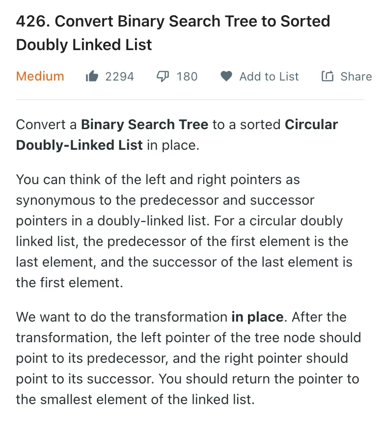
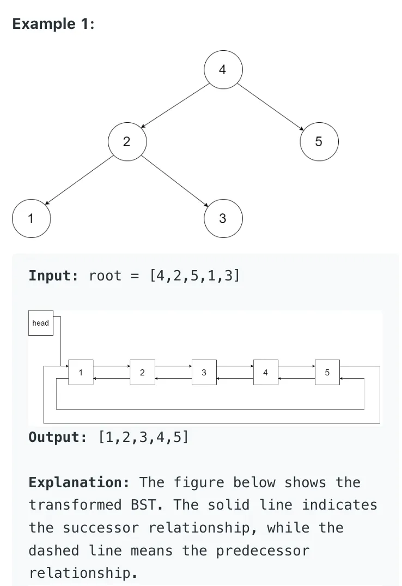
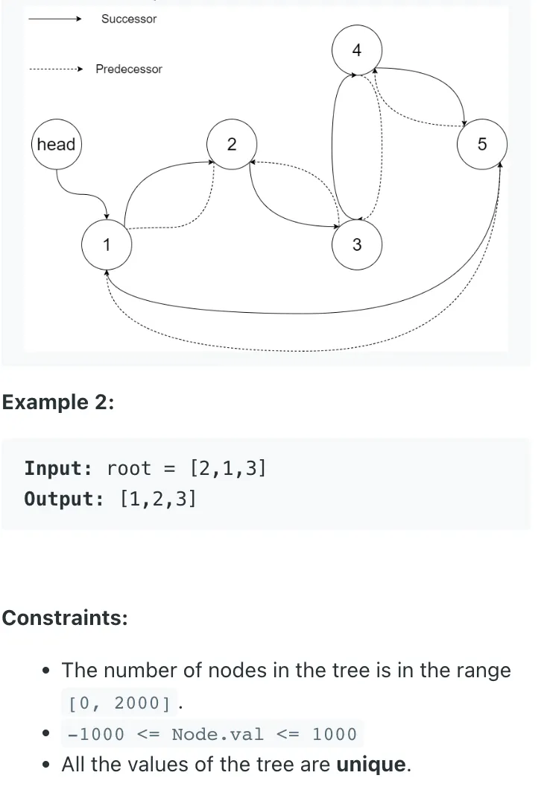

426. Convert Binary Search Tree to Sorted Doubly Linked List
考過的公司：Asked by: Bytedance, tiktok
Question



✍🏽 My Solution
Solution #1 [DFS]
Runtime: 0 ms, faster than 100.00% of Java online submissions for Convert Binary Search Tree to Sorted Doubly Linked List.
Memory Usage: 42.3 MB, less than 58.17% of Java online submissions for Convert Binary Search Tree to Sorted Doubly Linked List.
/*
// Definition for a Node.
class Node {
public int val;
public Node left;
public Node right;
public Node() {}
public Node(int _val) {
val = _val;
}
public Node(int _val,Node _left,Node _right) {
val = _val;
left = _left;
right = _right;
}
};
*/
class Solution {
Node prev = null;
public Node treeToDoublyList(Node root) {
if (root == null) return null;
Node dummy = new Node(0, null, null);
prev = dummy;
dfs(root);
prev.right = dummy.right;
dummy.right.left = prev;
return dummy.right;
}
private void dfs(Node root) {
if (root == null) return;
dfs(root.left);
prev.right = root;
root.left = prev;
prev = root;
dfs(root.right);
}
}
Explanation (in my words)
- How does their solution work?
- step1: inorder tranversal by recursion to connect the original BST
- step2: connect the head and tail to make it circular
- Tips: Using dummy node to handle corner case
Solution #2 [BFS]
Runtime: 2 ms, faster than 8.33% of Java online submissions for Convert Binary Search Tree to Sorted Doubly Linked List.
Memory Usage: 42.4 MB, less than 58.17% of Java online submissions for Convert Binary Search Tree to Sorted Doubly Linked List.
class Solution {
Node prev = null;
public Node treeToDoublyList(Node root) {
if (root == null) return null;
Node dummy = new Node(0, null, null);
prev = dummy;
bfs(root);
prev.right = dummy.right;
dummy.right.left = prev;
return dummy.right;
}
private void bfs(Node root) {
if (root == null) return;
Stack<Node> stack = new Stack<>();
Node cur = root;
while (cur != null || !stack.isEmpty()) {
while (cur != null) {
stack.push(cur);
cur = cur.left;
}
cur = stack.pop();
prev.right = cur;
cur.left = prev;
prev = cur;
cur = cur.right;
}
}
}
Explanation (in my words)
- How does their solution work?
- 開心 自己寫的 現在已經可以掌握迭代的BFS中序遍歷寫法